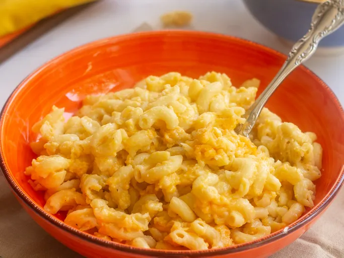

This crockpot mac and cheese is creamy, comforting, and takes just moments to assemble in a slow cooker. Great for large family gatherings and to take to potluck dinners. It's always a big hit!
These are the ingredients you'll need to make this crockpot mac and cheese recipe:
Macaroni: This classic mac and cheese recipe starts with a package of elbow macaroni
Butter: A stick of butter lends richness and flavor.
Seasonings: Simply season the macaroni and cheese with salt and pepper
Milk products: The creamy cheese sauce calls for whole milk and evaporated milk.
Eggs: Up the richness with two beaten eggs.
Canned soup: A can of condensed Cheddar cheese soup is the budged-friendly secret ingredient:
Paprika: Ground paprika is optional, but recommended for fans of flavor!
You'll find the full, step-by-step recipe below -- but here's a brief overview of what you can expect when you make this crockpot mac and cheese:
Boil the pasta in salted water, then drain and transfer to the slow cooker.
Stir in the butter, seasonings, and about half of the Cheddar.
Whisk the evaporated milk and eggs together, then stir into the pasta.
Whisk the milk and the soup together, then stir into the pasta.
Sprinkle the remaining cheese oever the pasta mixture and garnish with paprika.
Cook on low for 2 ½ to 3 hours.